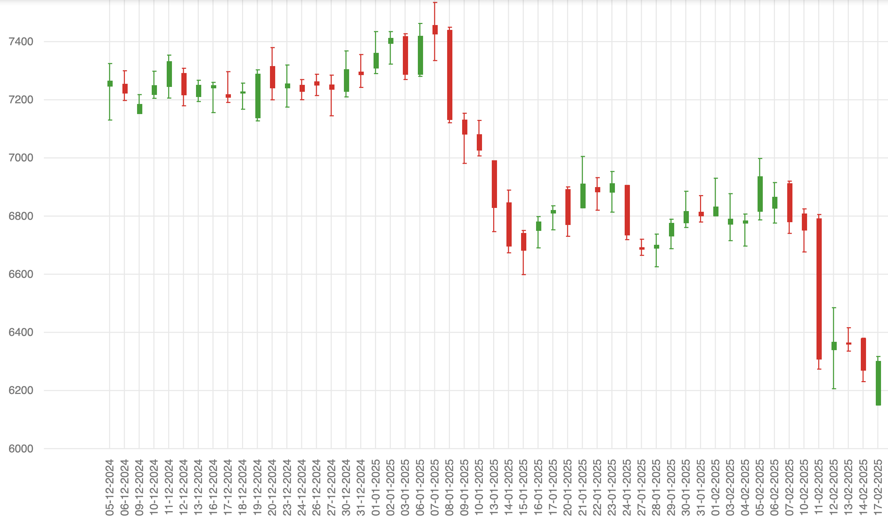

Beginners Guide: Candlestick Charts + RSI + MACD Strategy for Accurate Trading Signals
If you are new to trading and don't understand candlestick charts or indicators, this guide is for you. We will start from absolute basics — what a candlestick is, how to read it, why price patterns matter — and then we will build a simple but powerful strategy using RSI + MACD to take better trades.
📌 What is a Candlestick Chart?
Candlestick chart is a way to represent price movement of a stock within a specific time period (1 minute, 1 hour, 1 day etc). Each candle tells you four important things:
- OPEN: Price at the start of the time period
- CLOSE: Price at the end of the time period
- HIGH: Maximum price reached during that period
- LOW: Minimum price reached during that period
We use two types of candles:
- Green/Bullish Candle: Closing price is higher than opening price (price went UP)
- Red/Bearish Candle: Closing price is lower than opening price (price went DOWN)
Why are Candlesticks Important?
Because they show market psychology — Who is stronger right now? Buyers or Sellers?
Instead of looking only at numbers, candlesticks show emotions like:
- Fear (selling pressure)
- Greed (buying pressure)
- Reversals (trend changing points)
- Indecision (market confused, no direction)
Once you understand candles, you understand how the market behaves.
🟩 Basic Reversal Candlestick Patterns
These patterns often tell us when market can reverse direction.
- Hammer → Buyers rejected lower prices (bullish reversal)
- Bullish Engulfing → Strong buying pressure, trend may go up
- Shooting Star → Sellers rejected higher price (bearish reversal)
- Bearish Engulfing → Strong selling pressure, trend may go down
But candlesticks alone are not enough. Sometimes they work beautifully, sometimes they give false signals.
💡 So we combine them with indicators to increase accuracy.The 3-Step Beginner Strategy
This strategy combines:
- Candlestick Patterns
- RSI (overbought/oversold strength)
- MACD (trend confirmation)
This approach gives safer, confidence-based trade decisions.
🔶 Step 1 — Identify a Candlestick Reversal Pattern
- Hammer / Bullish Engulfing at support → Buy Possible
- Shooting Star / Bearish Engulfing at resistance → Sell Possible
Support means price has bounced from that level before.
Resistance means price previously rejected from that level.
🔶 Step 2 — Confirm strength using RSI
RSI (Relative Strength Index) shows if market is overbought or oversold.
- RSI below 30 = oversold → buyers may enter
- RSI above 70 = overbought → sellers may enter
If a bullish candle appears AND RSI is near 30 → BUY signal strengthens.
If a bearish candle appears AND RSI is above 70 → SELL signal strengthens.
🔶 Step 3 — Validate trend with MACD
- MACD Line crosses above Signal Line → Bullish confirmation
- MACD Line crosses below Signal Line → Bearish confirmation
MACD gives final approval before entering the trade.
Practical Example for Beginners
Imagine Nifty is falling, touches support, and forms a Bullish Engulfing candle.
✔ RSI = near 28 → Market oversold ✔ MACD = crossover upward → buying interest increasing ➡️ Buy Entry becomes strong and logical.🔒 Stop-loss = below candle wick 🎯 Target = previous swing high or next resistance
When to Avoid Trades? (Very Important)
- No clear trend (sideways market)
- RSI and MACD give opposite signals
- Entering trade without stop-loss
Trading is not prediction — it is probability. This method simply increases probability in your favor.
This content is educational, not financial advice. Practise first.